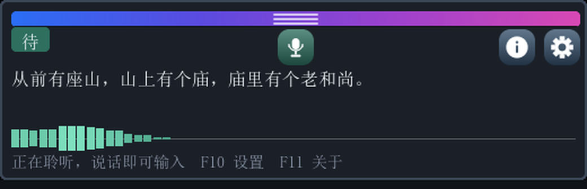
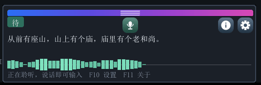
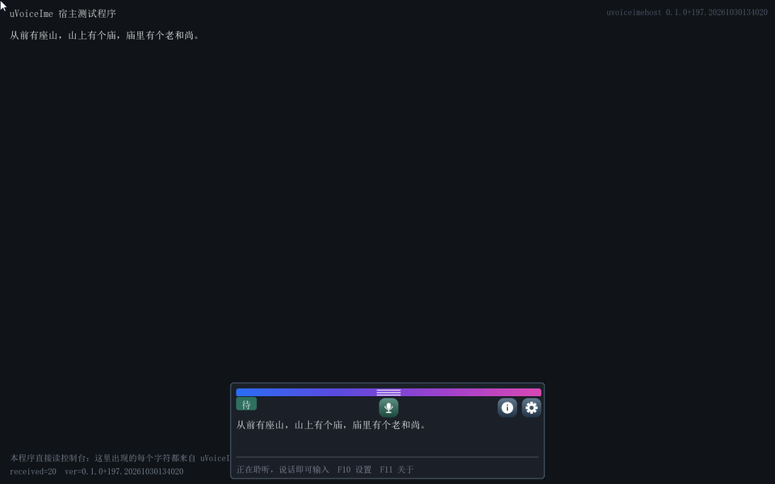
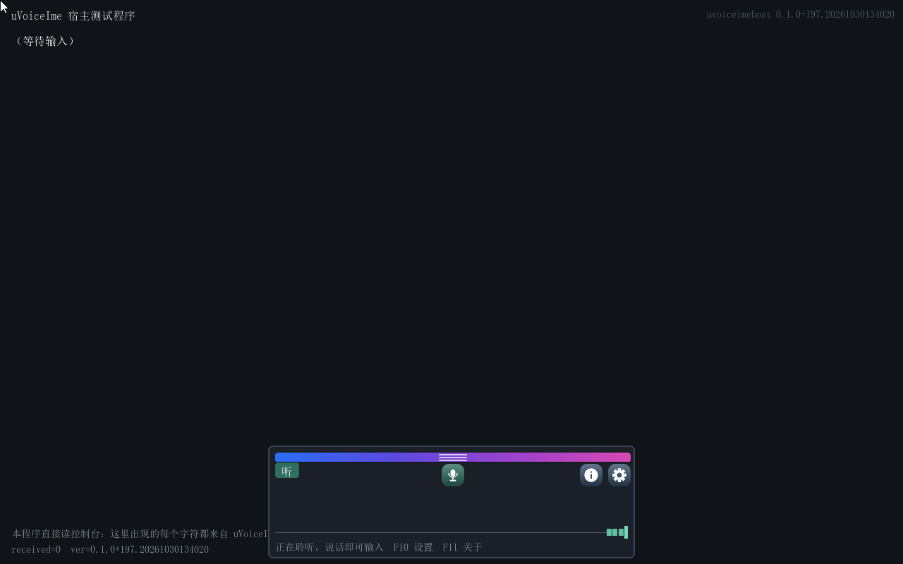
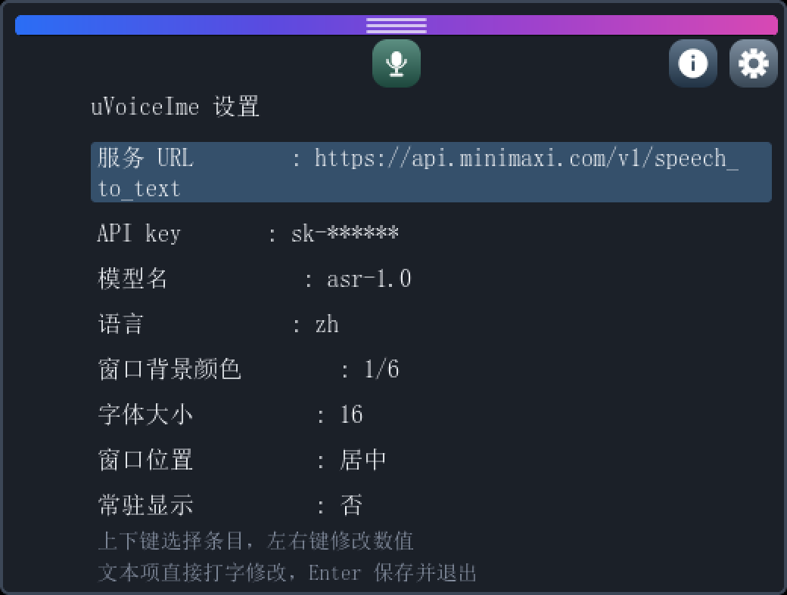
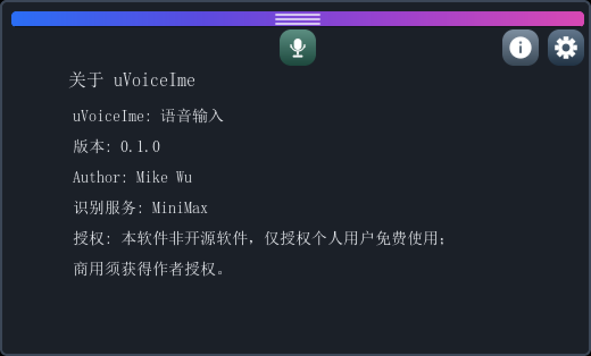

uVoiceIme 产品手册
uVoiceIme 是给 UEFI Shell 用的语音输入法。对着麦克风说话，识别出来的文字按普通按键落进当前前台程序，对它上面的程序来说，这和打字没有区别。
为什么需要它
UEFI Shell 里没有输入法。能敲的只有 ASCII，中文、长句、标点都无从下手。想在固件环境里输入一段中文，要么另外接一台机器，要么先在纸上抄好再一个个敲进去。
uVoiceIme 把这件事挪到固件层解决：接管控制台，采集麦克风，把语音送到云端识别，再把结果按字符注入控制台输入队列。Shell、自研的 UEFI 应用、诊断工具，都不需要改一行代码。
运行条件
| 项 | 要求 |
|---|---|
| 固件环境 | 有 GOP 图形输出的 UEFI 环境，能显示中文（自带字库，不依赖固件字体） |
| 声卡 | AC'97 兼容。这是本项目验证过的唯一一种，QEMU 默认提供 |
| 网络 | 能访问 api.minimaxi.com 的 HTTPS 接口 |
| 识别服务 | 自备 MiniMax 账号与 API key，按音频时长计费 |
| 输入设备 | 键盘即可；有鼠标或触摸板可以点按钮、拖窗口 |
界面

浮窗是一块 520 像素宽的常驻面板，压在宿主程序上面，位置可拖。自上而下是这几样东西：
| 元素 | 位置 | 作用 |
|---|---|---|
| 渐变条 | 顶部 | 按住拖动窗口 |
| 状态芯片 | 左上 | 当前状态，一个字 |
| 麦克风按钮 | 水平居中 | 开关采集，点亮表示在听 |
| i 与齿轮 | 右上 | 关于页、设置页 |
| 识别文字 | 中部 | 最近一次识别结果 |
| 电平波形 | 下部 | 实时输入电平，60 格，每格 20 毫秒 |
| 提示行 | 底部 | 当前可用热键 |
状态芯片
芯片只有一个字，一眼能判断程序在做什么。
| 字 | 含义 |
|---|---|
| 待 | 空闲，等待开口 |
| 听 | 正在采集，VAD 在判句 |
| 识 | 已断句，正在等云端返回 |
| 误 | 出错，通常是网络或密钥 |
电平波形
波形是判断“麦克风到底有没有收到声音”的唯一依据。它围绕中线上下对称生长，越响柱子越高，静音时就是中线附近的一条直线。
这一点很要紧：语音识别失败的时候，先看波形。波形平着，问题在麦克风那头，不在识别那边。说话时波形跟着起伏，才说明音频真的进了固件。
操作
| 键 | 作用 |
|---|---|
| F9 | 显示或隐藏浮窗 |
| F10 | 打开设置页 |
| F11 | 打开关于页 |
| F12 | 麦克风开或关 |
热键用功能键而不是 Ctrl 组合，是因为 OVMF 上报的 KeyShiftState 恒为零，修饰键状态拿不到。功能键在扫描码里，不受这个影响。
鼠标可以直接点浮窗上的按钮，也可以按住顶部渐变条拖动窗口。绝对指针和相对指针两种设备都支持。
语音识别

上面这段是实机录制，输入的是合成语音“从前有座山，山上有个庙，庙里有个老和尚。”。它走的是与真实麦克风完全相同的链路：采集、降采样、VAD 断句、云端识别、注入控制台。用合成音只是为了让每次演示的音频一致，不是旁路。
识别结果同时出现在两个地方，浮窗里一份，宿主程序里一份：

宿主程序左下角的 received=20 是它收到的字符数，与这句话的 20 个字符对得上。
一次识别经过这几步：
- AC'97 以 48 kHz 双声道常驻采集，环形缓冲可兜住 8 秒音频，用来跨过识别期间的停顿。
- 降采样成 16 kHz 单声道，每 20 毫秒一帧。
- VAD 按帧能量判定说话与静音，连续有声即开口，连续静音 600 毫秒即断句。
- 整段音频以 multipart 形式 POST 到 MiniMax 的
speech_to_text接口。 - 返回的文本按 UTF-8 逐个码点转成按键注入，宿主读到的就是普通字符。
输入到别的程序里

同一套链路，换一个前台程序。附带的宿主程序只做一件事：把收到的字符显示出来。语音识别完的句子逐字出现在它的接收区里，和键盘敲进去的没有区别。
上面这段是三句话分开说的：每说完一句，浮窗先出结果，随后那几个字落进宿主程序；等下一句开口，再来一轮。左下角的 received=20 是它累计收到的字符数，与三句话加起来一样多。
设置页

八项设置，两种改法：
- 上下键选行，左右键改枚举
- 文本项直接打字修改，Backspace 删除
改完按 Enter 保存并退出。URL、API key、模型名这三项会写回配置文件；其余五项是枚举，改了就生效。
| 设置项 | 说明 |
|---|---|
| 服务 URL | 识别接口地址，默认 https://api.minimaxi.com/v1/speech_to_text |
| API key | MiniMax 的密钥，sk- 开头 |
| 模型名 | 默认 asr-1.0 |
| 语言 | 默认自动检测，也可指定 zh、yue、en、ja、ko 等 |
| 窗口背景颜色 | 六套配色，1/6 到 6/6 |
| 字体大小 | 14 或 16 |
| 窗口位置 | 居中、左下、右下 |
| 常驻显示 | 是或否 |
关于页

关于页显示版本、作者、当前识别服务与授权说明。识别服务那一行会标出 key 是否已经填好。
配置文件
uvoiceime.cfg，键值对，一行一个，与 uvoiceime.efi 放在同一个目录：
url=https://api.minimaxi.com/v1/speech_to_text
api-key=
model=asr-1.0
language=
bg=0
font=16
placement=center
always-on=offapi-key 就在这份文件里，以明文存放。填上之后保存，重启输入法生效。这份文件不要外传。
旧格式的文件名是 voiceime.cfg，只在升级时用来搬运 API key，搬到新文件之后就没人再读它。
加载方式
在 UEFI Shell 里（顺序是强制的，驱动必须先于任何需要语音输入的程序）：
Shell> fs0:
FS0:\> load uvoiceime.efi :: 装上并常驻，屏幕底部随即浮出浮窗
FS0:\> uvoiceimehost.efi :: 再启动需要输入的程序（这里用附带的宿主程序）不能直接敲 uvoiceime.efi 回车。它是驱动，Shell 只派发应用镜像；驱动由 load、启动项或固件的 dispatcher 启动。放进 startup.nsh 时那一时刻还没有当前目录，必须写绝对路径 load fs0:\uvoiceime.efi。
合入 BIOS 或固件，三种形态任选：
- Shell 里
load，最省事，U 盘维护环境首选。 - 建
Driver####或Boot####启动项指向uvoiceime.efi，固件按文件路径加载，连 Shell 都不需要。 - 编进固件卷，由 DXE dispatcher 自动加载并常驻，磁盘上什么都不用放。这一条有个硬性前提：给驱动写
[Depex]，否则它会在 GOP 与控制台输入就绪之前被调度、装不出窗口然后被卸载。
[Depex]
gEfiGraphicsOutputProtocolGuid AND gEfiSimpleTextInProtocolGuid卸载：用 dh 找到驱动的 image handle，再 unload <编号>。
已知限制
刚开麦就说，开头会丢。 前 1.28 秒用于估计环境噪声底，这期间不确认语音起点。所以加载输入法之后，稍等一下再开口。
识别期间按键延后。 识别是阻塞的 HTTPS 请求，一次 3 到 5 秒。这期间界面仍在刷新，按键也会被排空并生效，但新的语音要等这一次返回之后才处理。
帧率低的宿主程序会拖慢采集。 采集挂在读键盘这条链上。桌面宿主是紧循环，一秒能泵几百次；而一帧重绘要三百多毫秒的程序，一帧只能泵十几次，勉强追平实时。这种情况下长句会被切成小段，识别出来是半句。
麦克风必须有信号。 波形平着就是没信号，先查插头与物理静音开关，再怀疑软件。
只支持 AC'97。 这是 QEMU 默认提供的声卡，也是本项目验证过的唯一一种。其它声卡上的采集尚未接入。
排查
先看波形，再看日志。
波形平着不动，说明音频没进固件，问题在麦克风、插头或声卡初始化的某一环，跟云端识别没有关系。波形跟着说话起伏，才轮到查识别那一侧。
串口日志里这几行能定位绝大多数问题：
| 日志 | 含义 |
|---|---|
the microphone is up | 采集启动成功 |
level = -34 dB | 每帧电平，正常说话在 -50 到 -20 之间 |
a speech segment of N bytes ended | 断出了一句，N 太小说明被切碎 |
recognised: N chars | 云端返回的字节数，0 说明那段里没有人声 |
HTTP 200 | 请求通了，问题不在网络 |
状态芯片停在“误”，通常是密钥没填对、账户欠费，或者网络出不去。先换一台机器用同一个 key 试一次，就能分清是哪一头。
版本与授权
当前版本 0.1.0+231。
本软件为专有软件，不开源。对外发布的二进制品免费授权个人用户用于个人、非商业用途；商业用途需另行取得作者书面授权。识别用的云端服务由用户自备账号，相关费用与数据处理不在本软件的授权范围内。
Author : Mike Wu